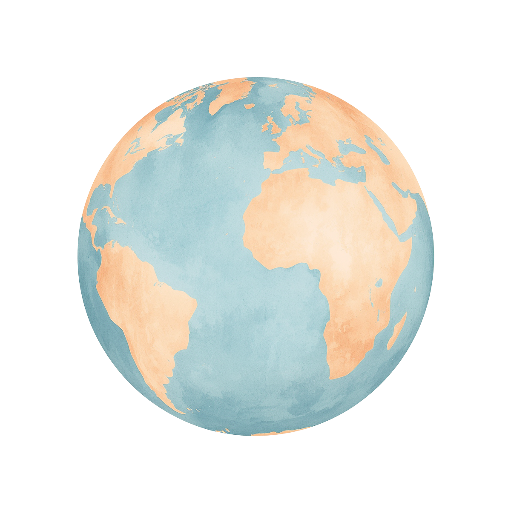

Family Travel Guide
家族の数だけ、 旅がある。
誰かの経験が、誰かの地図になる。


scroll

Family Travel Guide
誰かの経験が、誰かの地図になる。
About
子どもが小さいころ、子連れ旅行の情報が全然見つからなくて困りました。
信頼できる情報に出会えないあのストレス、わかります。
だから作り始めました。
まだ途中だし、間違いもある。
でも、だからこそ一緒に育てていけると嬉しいです。
— サワディー（Wamilyオーナー）
コンセプトを読む →Guidebook
家族の旅が増えるたびに、ページも増えていく。
ブログを書くように、少しずつ。
一緒に育ててくれる仲間がいたら、もっと嬉しい。


ネットのまとめじゃない。自分たちの足で歩いた場所だけ載せています。
情報は生きもの。新しいことがわかるたびに書き換えています。
現地ではスマホで地図を見ながら動くから。全部マップに落としてあります。
一部の国には、現地で暮らす家族がいます。困ったら頼れる人がいる安心感。